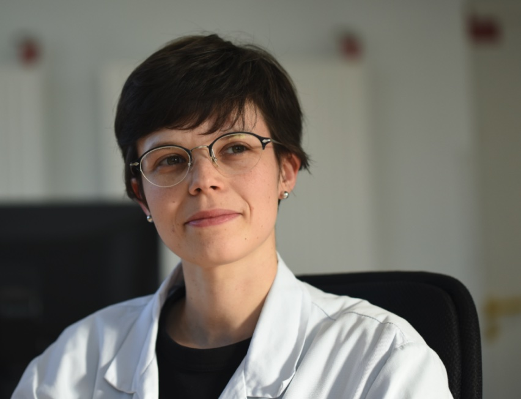

Curriculum Vitae
Dr Pauline Lallemant‑Dudek — Maître de conférences & Praticien hospitalier

Dr Pauline Lallemant‑Dudek
MCU-PH Neurosciences MPR Pédiatrique
- Courriel : pauline.lallemant@aphp.fr
- N° RPPS : 10101093945
- Affiliation AP-HP : Consulter la page médecin ↗
📍 Postes & Responsabilités cliniques
Depuis sept. 2023
Maître de conférences universitaire — Praticien hospitalier (MCU-PH)
Sorbonne Université & AP-HP, Paris
Depuis oct. 2020
Cheffe de service
Médecine Physique et Réadaptation Pédiatrique, Hôpital Armand Trousseau (AP-HP)
Depuis mars 2021
Co-directrice médicale
Plateforme de transition « ESCALE », Hôpital Armand Trousseau (AP-HP)
Sept. 2020 — Sept. 2023
Praticien hospitalier universitaire (PHU)
MPR pédiatrique, Hôpital Armand Trousseau (AP-HP) / Sorbonne Université
2016 — 2019
Chef de clinique assistant (CCA)
MPR pédiatrique, Hôpital Armand Trousseau (AP-HP) / Sorbonne Université
2011 — 2016
Interne des hôpitaux
Spécialisation en Médecine Physique et de Réadaptation, Université Paris Descartes
🎓 Formation & Diplômes
Déc. 2024
Doctorat en Neurosciences (Ph.D.)
Institut du Cerveau (ICM) — Équipe « Neurogénétique de la motricité » (Pr A. Dürr)
2022 — 2023
DU Pédagogie médicale
Sorbonne Université
Nov. 2022
Certification Bonnes Pratiques Cliniques (BPC)
Oct. 2022
Formation de coordonnateur en ETP
AP-HP
2019 — 2020
DIU Maladies génétiques
Université de Paris
2018 — 2019
DIU Neuro-urologie
Sorbonne Université
Oct. 2016
Doctorat d’État en Médecine
Université Paris Descartes
Juin 2016
DES Médecine Physique et de Réadaptation
2013 — 2014
Master 2 Ingénierie Biomédicale
ENSAM / Université Paris Descartes
2005 — 2011
Études de médecine
Université François-Rabelais (Tours)
2005
Baccalauréat Scientifique
Mention Bien
📘 Pédagogie, Enseignement & Encadrement
🏛️ Responsabilités pédagogiques
- Depuis sept. 2023 : Responsable de l’UE « Santé, maladie, handicap », IFMS — Sorbonne Université
- Depuis sept. 2023 : Responsable du comité pédagogique du DU Orthèses, Sorbonne Université
- Depuis 2018 : Co-organisation du module pédiatrie du DES de MPR
👩🏫 Activités d’enseignement
> 60 heures/an destinées aux étudiants en médecine et médecins praticiens, notamment dans les cursus :
- MPR pédiatrique
- Dysraphismes spinaux
- Neuro-urologie
- Urodynamique
- Orthèses
🎓 Encadrement de thèses
Encadrement de 6 thèses d’exercice (MPR, chirurgie pédiatrique) axées sur :
- Dysraphismes spinaux
- Vessie neurologique
- Ostéogenèse imparfaite
- Continence chez l’enfant
🏅 Bourse, Distinctions & Affiliations
🏆 Bourses & Prix
- Nov. 2023 : Contrat Sorbonne Université — Étude Walk-up (10 000 €)
- Sept. 2021 : Bourse Brainteam — Maladies rares (50 000 €)
- Oct. 2019 : Bourse SOFMER — IPSEN
- Nov. 2016 : Prix de thèse ASBH
🤝 Sociétés savantes & Partenariats
- Comité Urologie de l’enfant (AFU) — Depuis 2024
- Comité scientifique du congrès SFERHE — 2024
- Groupe d’étude neuro-urologique francophone (GENULF) — Depuis 2022
- SOFMER & SFERHE — Depuis 2017
- Collaborations industrielles : Comités de lancement (nouvelles indications) & formation à l’injection de toxine botulique intramusculaire
📚 Publications
Publications scientifiques dans des revues à comité de lecture
- Dugas A., Guilbaud L., de Saint-Denis T., Lallemant-Dudek P., Simonnet H., Vande Perre S. et al., 2025. Outcome of Children With Prenatally Diagnosed Saccular Limited Dorsal Myeloschisis: The Importance of Accurate Diagnosis. Prenatal Diagnosis.
- Lallemant-Dudek P., Coarelli G., Heinzmann A., Amarenco G., Hentzen C., Denys P., Joussain C., Pichon B., Robain G., Haddad R., Guillaud-Bataille M., Durr A., 2025. Hereditary Spastic Paraplegias, when to expect bladder dysfunction? A genetic and urodynamic study. European Journal of Neurology.
- Maurel N., Diop A., Lallemant-Dudek P., Fitoussi F., 2025. Upper limb kinematics in patients with neonatal brachial plexus palsy with different levels of palsy. Clinical Biomechanics.
- Bedoux A., Lallemant-Dudek P., Bensidhoum M., Potier E., Larochette N., Mary P. et al., 2024. Effects of shear stress on mesenchymal stem cells of patients with osteogenesis imperfecta. Orthopaedics & Traumatology: Surgery & Research.
- Jouannic J.M., Blondiaux E., de Saint-Denis T., Lallemant P., Garel C., 2024. Response to: Prenatal Diagnosis and Postnatal Outcome of Closed Spinal Dysraphism, by Bedei et al. Prenatal Diagnosis.
- Cogan G., Zaki M.S., Issa M., Keren B., Guillaud-Bataille M., Renaldo F. et al., 2024. Biallelic variants in ERLIN1: a series of 13 individuals with spastic paraparesis. Human Genetics.
- Lavorgna L., Maida E., Reinhard C., Cras P., Reetz K., Molnar M.J., Nonnekes J., Summa S., Diserens K., Petrarca M., Albanese A., Leocani L., Delussi M., Vinciguerra C., Pagliano E., Kubica J., Lallemant-Dudek P. et al., 2024. The growing role of telerehabilitation and teleassessment in the management of movement disorders in rare neurological diseases: a scoping review. Telemedicine and e-Health.
- Fitoussi F., Lallemant-Dudek P., 2024. The upper limb in children with cerebral palsy. Evaluation and treatment. Orthopaedics & Traumatology: Surgery & Research.
- Athiel Y., Jouannic J.M., Maufré V., Dehan C., Adam C., Blot S., Lallemant-Dudek P. et al., 2023. Allogenic umbilical cord-derived mesenchymal stromal cells improve motor function in prenatal surgical repair of myelomeningocele: An ovine model study. BJOG.
- Lallemant-Dudek P., Livia P., Coarelli G., Heinzmann A., Charles P., Ewenczyk C., Fenu S., Monin M.L., Corcia P., Depienne C., Mochel F., Benard J., Tezenas du Montcel S., Durr A., 2023. Individual perceptions of environmental factors that influence lower limb spasticity in hereditary spastic paraparesis. Annals of Physical and Rehabilitation Medicine.
- Tezenas du Montcel S., Petit E., Titilayo O., Faber J., Lallemant-Dudek P. et al., 2023. Baseline Clinical and Blood Biomarkers in Patients With Preataxic and Early-Stage Disease Spinocerebellar Ataxia 1 and 3. Neurology.
- Parodi L., Barbier M., Jacoupy M., Pujol C., Lejeune F.X., Lallemant-Dudek P. et al., 2022. The mitochondrial seryl-tRNA synthetase SARS2 modifies onset in spastic paraplegia type 4. Journal of Genetic Medicine.
- Guilbaud L., Dugas A., Weber M., Deflers C., Lallemant-Dudek P., Lilin T., Adam C., Cras A., Mebarki M., Zerah M., Faivre L., Larghero J., Jouannic J.M., 2022. In utero treatment of myelomeningocele with allogenic umbilical cord-derived mesenchymal stromal cells in an ovine model. Current Research in Translational Medicine.
- Madec F.X., Chamond O., Audry G., Lallemant-Dudek P., 2021. Repeated detrusor injection of botulinum toxin A for neurogenic bladder in children: a long term option? Progrès en Urologie.
- Vande Perre S., Guilbaud L., de Saint Denis T., Maurice P., Lallemant-Dudek P., Maisonneuve E., Dhombres F., Blondiaux E., Ducou le Pointe H., Zerah M., Jouannic J.M., Garel C., 2021. The myelic Limited Dorsal Malformation: prenatal ultrasonic characteristics of an intermediate form of dysraphism. Fetal Diagnosis and Therapy.
- Maurel N., Diop A., Lallemant-Dudek P., Fitoussi F., 2021. Upper limb kinematics after Latissimus Dorsi transfer in children with brachial plexus birth palsy. Clinical Biomechanics.
- Bachy M., Lallemant-Dudek P., Grimberg J., Fitoussi F., 2021. Palliative shoulder and elbow surgery in obstetrical brachial plexus birth palsy. Hand Surgery and Rehabilitation.
- Lallemant-Dudek P., Vergari C., Dubois G., Forin V., Vialle R., Skalli W., 2021. Ultrasound shearwave elastography to characterize muscles of healthy and cerebral palsy children. Scientific Reports.
- Léguillier T., Favier R., Harroche A., Lasne D., Bachelot-Loza C., Borgel D., Boussaroque A., Pascreau T., Lallemant-Dudek P., Gkalea V., Haguet M.C., Cormier-Daire V., Beaudeux J.L., Monnot S., Lapillonne H., Baujat G., Forin V., Nivet-Antoine V., 2021. Assessing bleeding risk in 18 children with osteogenesis imperfecta. British Journal of Haematology.
- Lallemant-Dudek P., Darios F., Durr A., 2021. Recent advances in understanding hereditary spastic paraplegias and emerging therapies. F1000Research.
- Lallemant-Dudek P., Durr A., 2021. Clinical and genetic update of hereditary spastic paraparesis. Revue Neurologique.
- Guilbaud L., Maurice P., Lallemant-Dudek P., de Saint Denis T., Maisonneuve E., Dhombres F., Friszer S., Di Rocco F., Garel C., Moutard M.L., Lachtar M.A., Rigouzzo A., Forin V., Zerah M., Jouannic J.M., 2021. Open fetal surgery for myelomeningocele repair in France. Journal of Gynecology Obstetrics and Human Reproduction.
- de la Fournière B., Dhombres F., Maurice P., de Foucaud S., Lallemant P., Zérah M., Guilbaud L., Jouannic J.M., 2020. Prevention of neural tube defects by folic acid supplementation: a national population-based study. Nutrients.
- Lallemant-Dudek P., Crétolle C., Hameury F., Lemelle J.L., Louis-Borrione C. et Forin V., 2020. Multicenter evaluation of the adherence to Peristeen transanal irrigation system in children. Annals of Physical and Rehabilitation Medicine.
- Léotard A., Taytard J., Aouate M., Boule M., Forin V., Lallemant-Dudek P., 2018. Diagnosis, follow-up and management of sleep disordered breathing in children with Osteogenesis Imperfecta. Annals of Physical and Rehabilitation Medicine.
- Faure A., Peycelon M., Lallemant P., Audry G., Forin V., 2016. Pros and cons of transurethral self-catheterization in boys: long-term teaching experience in a pediatric rehabilitation centre. Urology Journal, 1-8.
- Usami K., Lallemant P., Roujeau T., James S., Beccaria K., Levy R., Di Rocco F., Sainte-Rose C., Zerah M., 2016. Spinal lipoma of the filum terminale: review of 174 consecutive patients. Child’s Nervous System, 13(2), 2622-8.
- Lallemant P. et Forin V., 2015. Les sinus dermiques : une urgence neurochirurgicale. Archives de Pédiatrie, 22(3), 272-275.
- Dariane C., Peycelon M., Lallemant P., Forin V. et Audry G., 2014. Prise en charge endoscopique de l’incontinence des vessies neurologiques d’origine médullaire de l’enfant. Progrès en Urologie, 24(1), 39-45.
Ouvrages & Chapitres pédagogiques
- Coéditrice : Handicaps et rééducation de l’enfant, Elsevier, 2025.
- Auteure de chapitres :
- Dysraphismes spinaux
- Enfants et bilan urodynamique
- Troubles vésico-sphinctériens en pathologie neurologique
🗣️ Communications orales & Interventions
- Lallemant-Dudek P. Les paraparésies spastiques héréditaires, quand s’attendre à des troubles vésico-sphinctériens ? Étude génétique et urodynamique. Congrès de la SOFMER, Toulouse, 2024.
- Lallemant-Dudek P. BUD : particularités en pédiatrie. Prise en charge urologique des pathologies pédiatriques. Congrès de la SIFUD, Antibes, 2024.
- Lallemant-Dudek P. BUD en pédiatrie : spécificités techniques et d’interprétation. Congrès de la SIFUD, Toulouse, 2023.
- Lallemant-Dudek P. Les MUST de la MPR : rapport du congrès de l’European Academy Child Disability (Barcelone, mai 2022). Congrès de la SOFMER, Rennes, 2022.
- Lallemant-Dudek P. Facteurs externes influençant la raideur des membres inférieurs dans les paraparésies spastiques héréditaires : point de vue du patient. Congrès de la SOFMER, Rennes, 2022.
- Welniarz A., Lallemant-Dudek P. Corrélations entre la symétrie des hémi-moelles et le déficit sensitivo-moteur des membres inférieurs dans une population pédiatrique de diastématomyélies. Congrès de la SOFMER, Rennes, 2022.
- Thépot M., Lallemant-Dudek P. Syndrome de régression caudale et vessie neurologique : une étude rétrospective. Congrès de la SOFMER, Rennes, 2022.
- Lallemant-Dudek P. Les consultations para-sport santé dédiées aux enfants. 34ᵉ Entretiens annuels de Garches, Paris, 2022.
- Lallemant-Dudek P. Table ronde : Dysraphisme spinal : prise en charge pelvipérinéale de l’enfant à l’adulte — Transition enfant-adulte. Congrès de la SIFUD, Saint-Malo, 2022.
- Lallemant-Dudek P., Crétolle C., Valancogne G. Malformations anorectales : point de vue pluridisciplinaire. Congrès de la SIFUD, Saint-Malo, 2022.
- Lallemant-Dudek P. Rachis et paralysie cérébrale chez l’enfant : prévention et traitements. Congrès As de Pique, Annecy, 2022.
- Lallemant-Dudek P., Tezenas du Montcel S., Durr A. Environmental modifiers in Hereditary Spastic Paraplegia. Webinar European Reference Network for Rare Neurological Diseases (ERN-RND), 2022.
- Lallemant-Dudek P. Le bilan urodynamique en pédiatrie. Congrès de la SIFUD, Perpignan, 2021.
- Lallemant-Dudek P. Rachis et paralysie cérébrale. Congrès As de Pique, Annecy, 2021.
- Fouquerelle C., Béaud N., Audry G., Lallemant-Dudek P. De la fuite urinaire à l’entérocystoplastie : parcours thérapeutique en MPR pédiatrique de 24 patients avec vessie neurologique sur atteinte médullaire. Congrès de la SOFMER, Lille, 2021.
- Lallemant-Dudek P., Tezenas du Montcel S., Durr A. Modifspa: Environmental modifiers in Hereditary Spastic Paraplegia. Webinar European Reference Network for Rare Neurological Diseases (ERN-RND), 2020.
- Lallemant-Dudek P., Forin V. Évaluation multicentrique de l’adhérence à l’irrigation colique trans-anale par le matériel Peristeen chez l’enfant. Congrès de la SOFMER, Bordeaux, 2019.
- Geoffroy T., Forin V., Lallemant-Dudek P. Favoriser la pratique du sport chez l’enfant handicapé avec une consultation spécialisée. Congrès de la SOFMER, Bordeaux, 2019.
- Lallemant-Dudek P., Maurel N., Diop A., Hérisson O., Fitoussi F. Shoulder Kinematic in obstetric brachial plexus palsy: Database, repeatability study for Mallet scale and Kinematic evolution after tendon transfer. Journée de la Société Française d’Orthopédie Pédiatrique, Bruxelles, 2019.
- Lallemant-Dudek P. Croissance et appareillage. Forum du Val de Grâce, Paris, 2019.
- Lallemant-Dudek P. Revue de la littérature de l’insuffisance sphinctérienne neurologique de l’enfant. GENULF, Paris, 2018.
- Madec F.X., Lallemant-Dudek P. Revue à long terme des injections du détrusor par toxine botulique chez l’enfant. GENULF, Paris, 2018.
- Lallemant-Dudek P. Actualités sur le spina bifida : « Médecine Physique et de Réadaptation : premier contact » et « La prise en charge ne peut être que pluridisciplinaire ». Journée CRMR C-MAVEM, Montrouge, 2018.
- Lallemant-Dudek P. Fragilités osseuses dans l’Ostéogenèse Imparfaite. Journées Parisiennes de Pédiatrie, Faculté de médecine Pierre et Marie Curie, Paris, 2018.
- Lallemant-Dudek P. Malformations ano-rectales et maladie de Hirschsprung : devenir à long terme et apport d’un service de Médecine Physique et Rééducation. Journées Parisiennes de Pédiatrie, Faculté de médecine Pierre et Marie Curie, Paris, 2018.
- Lallemant-Dudek P. Des ultrasons pour visualiser la capacité musculaire et tendineuse. Journées nationales de l’innovation en santé, Cité des sciences et de l’industrie, Paris, 2018.
- Lallemant-Dudek P. Lipome du cône médullaire : une étude de 546 enfants du suivi neurochirurgical à la prise en charge en médecine physique et de réadaptation. Congrès de la SOFMER, Nancy, 2017.
- Le Liepvre H., Lallemant-Dudek P., Haddad R., Robain G., Zerah M., Forin V. Transition ado-adulte d’une cohorte de patients suivis pour dysraphisme : intérêts d’une consultation pluridisciplinaire. Congrès de la SOFMER, Nancy, 2017.
- Vergnaud N., Forin V., Lallemant-Dudek P. Observance et tolérance des orthèses de nuit anti-équin chez l’enfant : étude épidémiologique prospective. Congrès de la SFERHE, Saint-Malo, 2017.
- Lallemant-Dudek P. Lipome du cône médullaire : une étude de 546 enfants du suivi neurochirurgical à la prise en charge en médecine physique et de réadaptation. Centre de Référence des Maladies Rares « Spina », Rennes, 2016.
- Lallemant-Dudek P. Lipome du cône médullaire : une étude de 546 enfants du suivi neurochirurgical à la prise en charge en médecine physique et de réadaptation. GENULF, Paris, 2016.
- Lallemant-Dudek P. A shearwave elastography muscles comparison between children with cerebral palsy and control children. International Conference on Cerebral Palsy and other Childhood-onset Disabilities, Stockholm, 2016.
- Lallemant-Dudek P. Neuro sphincter effects of an Acute Disseminated EncephaloMyelitis. 3rd International Conference on Pediatrics, San Antonio, 2015.
- Lallemant-Dudek P. Étude de reproductibilité de l’élastographie musculaire par ultrasons chez l’enfant. Journées de la Société Française d’Orthopédie Pédiatrique, Paris, 2015.
- Lallemant P. et Forin V. Le zolédronate chez l’enfant porteur d’une ostéogenèse imparfaite. 9ᵉ Congrès de la Société Algérienne de Rhumatologie, Alger, 2013.
🎤 Modérations de sessions scientifiques
- 2025 : Colloque Les Massues, Lyon
- 2024 : Congrès de la SOFMER, Toulouse
- 2023 : Congrès de la SOFMER, Le Havre
- 2019 : Congrès de la SOFMER, Bordeaux
- 2018 : Congrès ISPRM, Paris
- 2017 : Congrès de la SOFMER, Nancy